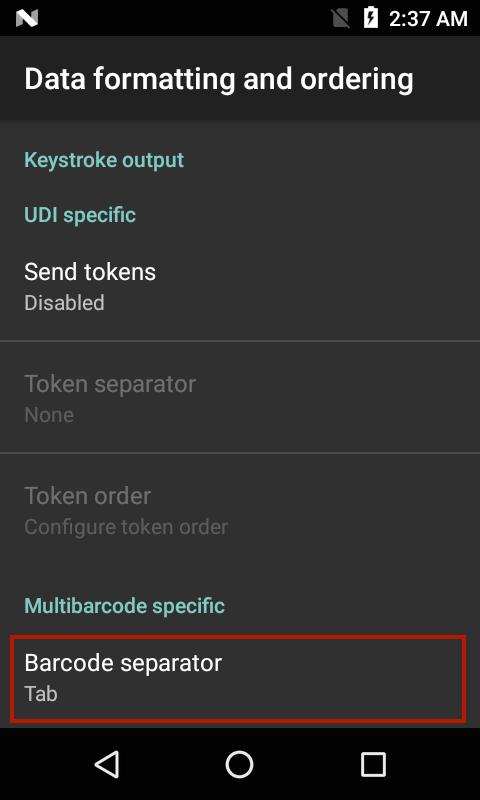
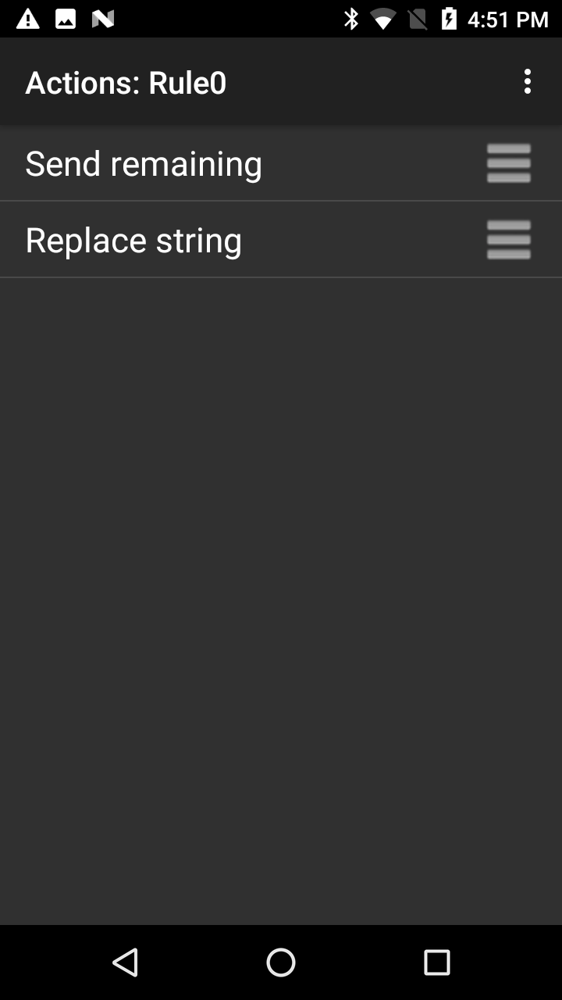

概述
按键输出收集已处理的数据，并将其作为一系列按键发送到关联的应用程序，从而仿真用户在设备上按键的操作。DataWedge 支持 TAB、ENTER 键和其他特殊字符，应用程序可能需要这些字符才能提交获取的数据供进一步处理，或由于其他原因将光标前进到另一输入字段。通过使用“操作”键字符（如下所示）并在基本数据格式或高级数据格式处理函数中将特殊字符添加到已获取的数据。
可使用 Set Config API 配置此功能的参数。
输出原始数据
除了其正常的纯文本和十六进制模式，DataWedge 还可在任何编码器的应用程序之前以其原始表单形式输出已获取数据。这在需要自定义编码器获取 Zebra 不支持的字符集时非常有用。
使用 com.symbol.datawedge.decode_data Intent 额外项将原始数据接收为字节流。有关更多信息，请参阅 Intent 输出指南。
无法将原始数据输出为按键。
按键输出设置
要启用配置文件的按键输出，请选中复选框： 按键输出选项
按键输出选项
操作键字符 - 启用嵌入条码、串行、RFID、语音或 MSR 数据的特殊字符注入。可能的值：
- 无 - 注入无操作键
- 制表符 - 在 ASCII Tab (0x09) 字符位置注入操作键
- 换行符 - 在 ASCII LF (0x0A) 字符位置注入操作键
- 回车符 - 在 ASCII CR (0x0D) 字符位置注入操作键
键事件选项 - 将按键作为键事件发送，将某些键事件作为字符串发送，并控制键事件延迟。选项：
- 键事件延迟 - 设置发送键事件之前的延迟（以毫秒为单位）
- 将字符作为事件发送 - 设置将 ASCII 代码 32 至 126 作为键事件发送
- 将 Enter 作为字符串发送 - 设置将 ENTER 按键输出作为字符串发送。默认情况下，此选项处于禁用状态，ENTER 作为键事件发送。
- 将 Tab 作为字符串发送 - 设置将 TAB 按键输出作为字符串发送。默认情况下，此选项处于禁用状态，TAB 作为键事件发送。
- 将控制字符作为事件发送 - 设置将 ASCII 代码 1 至 31 作为键事件发送默认情况下，此选项处于禁用状态，数据作为字符串发送。有关 ASCII 控制字符到 Android 键事件的映射，请参阅 ASCII 控制字符表。
字符间延迟 - 用于设置将每个字符交付到应用程序之后的延迟（以毫秒为单位）。此参数旨在帮助避免因调度数据过快而导致应用程序不能接受的问题。默认=0。如果在按键交付中遇到错误，请以 100为增量增加此值（最大增加到 1000），直到错误停止。注意：此参数可能会对应用程序的性能产生负面影响。
多字节字符延迟 - 仅将字符间延迟（如上所述）应用于多字节字符。此参数旨在帮助避免在将 Unicode 和多字节字符发送到 Android 浏览器时出现问题。仅当启用字符间延迟时才可用。默认情况下禁用。
键事件延迟 - 用于设置将控制字符作为按键调度到前台应用程序的延迟（以毫秒为单位）。
配置文件导入行为
对于从之前版本中导入到 DataWedge 6.7（及更高版本）的配置文件，将为“多字节字符延迟”指定的值应用到字符间延迟，并启用“仅延迟多字节字符”参数。
对于使用 DataWedge 6.7（及更高版本）创建并导入到以前版本的配置文件，仅将指定的延迟（如有）应用到多字节字符。
UDI 数据输出
此设置适用于在条码读取器参数中将扫描模式设置为 UDI 的情况，如在上述参考部分选定通用设备标识符参数中指定的一样，此操作将获取多个数据点（令牌）。
仅在某些 Zebra 设备（最高 Android P [9.x 版]）上使用成像器时支持此功能：

令牌选择 - 允许调整已获取 UDI 数据的输出顺序，并可选择在令牌之间插入“制表符”、“换行符”或“回车符”字符（如果需要）。
要调整 UDI 令牌设置：
1.轻触“发送令牌”选择已获取 UDI 数据的所需输出。
仅令牌 - DataWedge 将 UDI 数据解析为单独令牌的进行输出（如果选择，则以分隔符字符进行分隔）。
条码和令牌 - DataWedge 发送由标记化数据附加的条码字符串。如果未选择分隔符字符（请参阅步骤 2），则 DataWedge 发送相同数据的两个实例。
2.如果需要，在令牌屏幕中轻触“令牌分隔符”以在令牌之间指定要插入的分隔符字符。如果选择“条码和令牌”模式，则还在两者之间插入选择的字符。 如果禁用“发送令牌”，则此设置不可用。
如果禁用“发送令牌”，则此设置不可用。
3.轻触“令牌顺序”以在输出中包括/排除令牌，并调整其输出顺序。 拖动令牌以调整输出顺序。
拖动令牌以调整输出顺序。
以编程方式配置 UDI 数据输出并检索配置：
多条码数据输出
此设置适用于在条码读取器参数中将扫描模式设置为“多条码”，此操作可同时获取在相应读取器参数中指定的条码数量 (2-10)。
要配置多条码输出：
- 轻触“数据格式化和排序”以指定要在每一条码的数据之间插入的分隔符字符。
- 轻触“条码分隔符”以指定所需插入字符（CR、LF 或 TAB）。
否则，每个条码中的数据作为按键的单一字符串进行级联和递送。
要将自定义分隔符配置为多条码分隔符：
选择一个受支持的默认字符（CR、LF 或 TAB）作为多条码分隔符，并使用“高级数据格式”插件配置，将此选定字符替换为用户指定的字符。以下步骤会将“TAB”替换为“+”，作为自定义分隔符：
- 轻触“数据格式化和排序”以指定要在每一条码的数据之间插入的分隔符字符。
- 轻触“条码分隔符”以指定所需的插入字符（CR、LF 或 TAB）。在本例中，选择 TAB。
否则，每个条码中的数据作为按键的单一字符串进行级联和递送。 - 轻触“后退”以返回到配置文件屏幕。选择高级数据格式。

- 在“按键输出”下，单击“启用”（轻触复选框）。轻触 Rule0。

- 轻触“操作”进行配置。

- 从右上角的汉堡菜单中，选择“新操作”。

- 向下滚动并轻触“替换字符串”。

- 轻触“替换字符串”。
- 轻触“查找字符串”。

- 输入 Tab 的十六进制表示法：x09。轻触“确定”。

- 轻触“替换字符串”。
- 输入要用作替换的字符串，例如“+”。轻触“确定”。

- 轻触“后退”以返回到规则。
- 轻触并按住“替换字符串”旁边的水平条，然后将其拖动到“发送剩余数据”上方。
- 轻触“后退”。
执行扫描时，多条码解码中的每个条码现在都后跟一个加号“+”字符。
十六进制数据输出
在从原始形式转换为选定字符集之后，十六进制数据基于从扫描器框架接收到的已编码数据。选择十六进制输出选项时，将纯文本字符串转换为相应的十六进制数字，并作为字符串进行输出。该十六进制数据可通过编程方式获取。
以下 Java 命令将返回存储在按键或 Intent 输出字符串中的十六进制数据：
String hex = Hex.encodeHex(data.getString(DATA_STRING_TAG).toCharArray(), false);要了解更多信息和使用 DataWedge UI 启用十六进制输出，请参阅基本数据格式 (BDF)。
ASCII 控制字符表
ASCII 控制字符（范围：1-31）到 Android 键事件的映射表：
| 控制键 | 十进制 | 控制字符名称 | 说明 | 键事件 |
|---|---|---|---|---|
| Ctrl-A | 1 | 标题开头 | 用作标题的第一个字符 | KeyEvent { action=ACTION_DOWN, keyCode=KEYCODE_A, scanCode=0, metaState=META_CTRL_LEFT_ON, flags=<>, repeatCount=0, eventTime=<>, downTime=<>, deviceId=<>, source=0x0 } KeyEvent { action=ACTION_UP, keyCode=KEYCODE_A, scanCode=0, metaState=META_CTRL_LEFT_ON, flags=<>, repeatCount=0, eventTime=<>, downTime=<>, deviceId=<>, source=0x0 } |
| Ctrl-B | 2 | 文本开头 | 置于文本前面，用于终止标题 | KeyEvent { action=ACTION_DOWN, keyCode=KEYCODE_B, scanCode=0, metaState=META_CTRL_LEFT_ON, flags=<>, repeatCount=0, eventTime=<>, downTime=<>, deviceId=<>, source=0x0 } KeyEvent { action=ACTION_UP, keyCode=KEYCODE_B, scanCode=0, metaState=META_CTRL_LEFT_ON, flags=<>, repeatCount=0, eventTime=<>, downTime=<>, deviceId=<>, source=0x0 } |
| Ctrl-C | 3 | 文本结尾 | 用于终止文本 | KeyEvent { action=ACTION_DOWN, keyCode=KEYCODE_C, scanCode=0, metaState=META_CTRL_LEFT_ON, flags=<>, repeatCount=0, eventTime=<>, downTime=<>, deviceId=<>, source=0x0 } KeyEvent { action=ACTION_UP, keyCode=KEYCODE_C, scanCode=0, metaState=META_CTRL_LEFT_ON, flags=<>, repeatCount=0, eventTime=<>, downTime=<>, deviceId=<>, source=0x0 } |
| Ctrl-D | 4 | 传输结束 | 指示文本传输结束 | KeyEvent { action=ACTION_DOWN, keyCode=KEYCODE_D, scanCode=0, metaState=META_CTRL_LEFT_ON, flags=<>, repeatCount=0, eventTime=<>, downTime=<>, deviceId=<>, source=0x0 } KeyEvent { action=ACTION_UP, keyCode=KEYCODE_D, scanCode=0, metaState=META_CTRL_LEFT_ON, flags=<>, repeatCount=0, eventTime=<>, downTime=<>, deviceId=<>, source=0x0 } |
| Ctrl-E | 5 | 查询 | 用作请求响应 | KeyEvent { action=ACTION_DOWN, keyCode=KEYCODE_E, scanCode=0, metaState=META_CTRL_LEFT_ON, flags=<>, repeatCount=0, eventTime=<>, downTime=<>, deviceId=<>, source=0x0 } KeyEvent { action=ACTION_UP, keyCode=KEYCODE_E, scanCode=0, metaState=META_CTRL_LEFT_ON, flags=<>, repeatCount=0, eventTime=<>, downTime=<>, deviceId=<>, source=0x0 } |
| Ctrl-F | 6 | 确认 | 由接收方发送，作为对发送方的肯定响应 | KeyEvent { action=ACTION_DOWN, keyCode=KEYCODE_F, scanCode=0, metaState=META_CTRL_LEFT_ON, flags=<>, repeatCount=0, eventTime=<>, downTime=<>, deviceId=<>, source=0x0 } KeyEvent { action=ACTION_UP, keyCode=KEYCODE_F, scanCode=0, metaState=META_CTRL_LEFT_ON, flags=<>, repeatCount=0, eventTime=<>, downTime=<>, deviceId=<>, source=0x0 } |
| Ctrl-G | 7 | 铃声 | 在需要引起注意时使用 | KeyEvent { action=ACTION_DOWN, keyCode=KEYCODE_G, scanCode=0, metaState=META_CTRL_LEFT_ON, flags=<>, repeatCount=0, eventTime=<>, downTime=<>, deviceId=<>, source=0x0 } KeyEvent { action=ACTION_UP, keyCode=KEYCODE_G, scanCode=0, metaState=META_CTRL_LEFT_ON, flags=<>, repeatCount=0, eventTime=<>, downTime=<>, deviceId=<>, source=0x0 } |
| Ctrl-H | 8 | 退格 | 将活动位置在同一行上后移一个字符位置 | KeyEvent { action=ACTION_DOWN, keyCode=KEYCODE_H, scanCode=0, metaState=META_CTRL_LEFT_ON, flags=<>, repeatCount=0, eventTime=<>, downTime=<>, deviceId=<>, source=0x0 } KeyEvent { action=ACTION_UP, keyCode=KEYCODE_H, scanCode=0, metaState=META_CTRL_LEFT_ON, flags=<>, repeatCount=0, eventTime=<>, downTime=<>, deviceId=<>, source=0x0 } |
| Ctrl-I | 9 | 水平制表 | 将活动位置在同一行上前移到下一个预定义的字符位置 | 由于 Android 为 Tab 键定义了常量，因此通过“将 Tab 作为字符串/事件发送”进行管理 |
| Ctrl-J | 10 | 换行符 | 将活动位置前移到下一行的相同字符位置 | 由于 Android 为 Enter 键定义了常量，因此通过“将 Enter 作为字符串/事件发送”进行管理 |
| Ctrl-K | 11 | 垂直制表 | 将活动位置前移到下一预定行的相同字符位置 | KeyEvent { action=ACTION_DOWN, keyCode=KEYCODE_K, scanCode=0, metaState=META_CTRL_LEFT_ON, flags=<>, repeatCount=0, eventTime=<>, downTime=<>, deviceId=<>, source=0x0 } KeyEvent { action=ACTION_UP, keyCode=KEYCODE_K, scanCode=0, metaState=META_CTRL_LEFT_ON, flags=<>, repeatCount=0, eventTime=<>, downTime=<>, deviceId=<>, source=0x0 } |
| Ctrl-L | 12 | 换页 | 将活动位置前移到下一表格或页面中预定行的相同字符位置 | KeyEvent { action=ACTION_DOWN, keyCode=KEYCODE_L, scanCode=0, metaState=META_CTRL_LEFT_ON, flags=<>, repeatCount=0, eventTime=<>, downTime=<>, deviceId=<>, source=0x0 } KeyEvent { action=ACTION_UP, keyCode=KEYCODE_L, scanCode=0, metaState=META_CTRL_LEFT_ON, flags=<>, repeatCount=0, eventTime=<>, downTime=<>, deviceId=<>, source=0x0 } |
| Ctrl-M | 13 | 回车符 | 将活动位置移至同一行的第一个字符位置 | 由于 Android 为 Enter 键定义了常量，因此通过“将 Enter 作为字符串/事件发送”进行管理 |
| Ctrl-N | 14 | Shift out | 与 SHIFT IN 和 ESCAPE 结合使用，以扩展代码的图形字符集 | KeyEvent { action=ACTION_DOWN, keyCode=KEYCODE_N, scanCode=0, metaState=META_CTRL_LEFT_ON, flags=<>, repeatCount=0, eventTime=<>, downTime=<>, deviceId=<>, source=0x0 } KeyEvent { action=ACTION_UP, keyCode=KEYCODE_N, scanCode=0, metaState=META_CTRL_LEFT_ON, flags=<>, repeatCount=0, eventTime=<>, downTime=<>, deviceId=<>, source=0x0 } |
| Ctrl-O | 15 | Shift in | 与 SHIFT OUT 和 ESCAPE 结合使用，以扩展代码的图形字符集 | KeyEvent { action=ACTION_DOWN, keyCode=KEYCODE_O, scanCode=0, metaState=META_CTRL_LEFT_ON, flags=<>, repeatCount=0, eventTime=<>, downTime=<>, deviceId=<>, source=0x0 } KeyEvent { action=ACTION_UP, keyCode=KEYCODE_O, scanCode=0, metaState=META_CTRL_LEFT_ON, flags=<>, repeatCount=0, eventTime=<>, downTime=<>, deviceId=<>, source=0x0 } |
| Ctrl-P | 16 | 数据链路转义 | 更改有限数量的连续跟随字符的含义。它专门用于提供辅助数据传输控制功能。 | KeyEvent { action=ACTION_DOWN, keyCode=KEYCODE_P, scanCode=0, metaState=META_CTRL_LEFT_ON, flags=<>, repeatCount=0, eventTime=<>, downTime=<>, deviceId=<>, source=0x0 } KeyEvent { action=ACTION_UP, keyCode=KEYCODE_P, scanCode=0, metaState=META_CTRL_LEFT_ON, flags=<>, repeatCount=0, eventTime=<>, downTime=<>, deviceId=<>, source=0x0 } |
| Ctrl-Q | 17 | 设备控制 1 | 主要用于打开或启动辅助设备 | KeyEvent { action=ACTION_DOWN, keyCode=KEYCODE_Q, scanCode=0, metaState=META_CTRL_LEFT_ON, flags=<>, repeatCount=0, eventTime=<>, downTime=<>, deviceId=<>, source=0x0 } KeyEvent { action=ACTION_UP, keyCode=KEYCODE_Q, scanCode=0, metaState=META_CTRL_LEFT_ON, flags=<>, repeatCount=0, eventTime=<>, downTime=<>, deviceId=<>, source=0x0 } |
| Ctrl-R | 18 | 设备控制 2 | 主要用于打开或启动辅助设备 | KeyEvent { action=ACTION_DOWN, keyCode=KEYCODE_R, scanCode=0, metaState=META_CTRL_LEFT_ON, flags=<>, repeatCount=0, eventTime=<>, downTime=<>, deviceId=<>, source=0x0 } KeyEvent { action=ACTION_UP, keyCode=KEYCODE_R, scanCode=0, metaState=META_CTRL_LEFT_ON, flags=<>, repeatCount=0, eventTime=<>, downTime=<>, deviceId=<>, source=0x0 } |
| Ctrl-S | 19 | 设备控制 3 | 主要用于关闭或停止辅助设备 | KeyEvent { action=ACTION_DOWN, keyCode=KEYCODE_S, scanCode=0, metaState=META_CTRL_LEFT_ON, flags=<>, repeatCount=0, eventTime=<>, downTime=<>, deviceId=<>, source=0x0 } KeyEvent { action=ACTION_UP, keyCode=KEYCODE_S, scanCode=0, metaState=META_CTRL_LEFT_ON, flags=<>, repeatCount=0, eventTime=<>, downTime=<>, deviceId=<>, source=0x0 } |
| Ctrl-T | 20 | 设备控制 4 | 主要用于关闭、停止或中断辅助设备 | KeyEvent { action=ACTION_DOWN, keyCode=KEYCODE_T, scanCode=0, metaState=META_CTRL_LEFT_ON, flags=<>, repeatCount=0, eventTime=<>, downTime=<>, deviceId=<>, source=0x0 } KeyEvent { action=ACTION_UP, keyCode=KEYCODE_T, scanCode=0, metaState=META_CTRL_LEFT_ON, flags=<>, repeatCount=0, eventTime=<>, downTime=<>, deviceId=<>, source=0x0 } |
| Ctrl-U | 21 | 否定确认 | 由接收方发送，作为对发送方的否定响应 | KeyEvent { action=ACTION_DOWN, keyCode=KEYCODE_U, scanCode=0, metaState=META_CTRL_LEFT_ON, flags=<>, repeatCount=0, eventTime=<>, downTime=<>, deviceId=<>, source=0x0 } KeyEvent { action=ACTION_UP, keyCode=KEYCODE_U, scanCode=0, metaState=META_CTRL_LEFT_ON, flags=<>, repeatCount=0, eventTime=<>, downTime=<>, deviceId=<>, source=0x0 } |
| Ctrl-V | 22 | 同步空闲 | 同步传输系统在没有任何其他字符（空闲条件）的情况下用于提供信号，以便在数据终端设备之间实现或保持同步 | KeyEvent { action=ACTION_DOWN, keyCode=KEYCODE_V, scanCode=0, metaState=META_CTRL_LEFT_ON, flags=<>, repeatCount=0, eventTime=<>, downTime=<>, deviceId=<>, source=0x0 } KeyEvent { action=ACTION_UP, keyCode=KEYCODE_V, scanCode=0, metaState=META_CTRL_LEFT_ON, flags=<>, repeatCount=0, eventTime=<>, downTime=<>, deviceId=<>, source=0x0 } |
| Ctrl-W | 23 | 信息组传输结束符 | 指示数据传输信息组的结尾，数据被划分为这些信息组以便进行传输 | KeyEvent { action=ACTION_DOWN, keyCode=KEYCODE_W, scanCode=0, metaState=META_CTRL_LEFT_ON, flags=<>, repeatCount=0, eventTime=<>, downTime=<>, deviceId=<>, source=0x0 } KeyEvent { action=ACTION_UP, keyCode=KEYCODE_W, scanCode=0, metaState=META_CTRL_LEFT_ON, flags=<>, repeatCount=0, eventTime=<>, downTime=<>, deviceId=<>, source=0x0 } |
| Ctrl-X | 24 | 取消 | 指示它前面的数据有错误，因此将被忽略 | KeyEvent { action=ACTION_DOWN, keyCode=KEYCODE_X, scanCode=0, metaState=META_CTRL_LEFT_ON, flags=<>, repeatCount=0, eventTime=<>, downTime=<>, deviceId=<>, source=0x0 } KeyEvent { action=ACTION_UP, keyCode=KEYCODE_X, scanCode=0, metaState=META_CTRL_LEFT_ON, flags=<>, repeatCount=0, eventTime=<>, downTime=<>, deviceId=<>, source=0x0 } |
| Ctrl-Y | 25 | 介质结束 | 标识介质的物理端 | KeyEvent { action=ACTION_DOWN, keyCode=KEYCODE_Y, scanCode=0, metaState=META_CTRL_LEFT_ON, flags=<>, repeatCount=0, eventTime=<>, downTime=<>, deviceId=<>, source=0x0 } KeyEvent { action=ACTION_UP, keyCode=KEYCODE_Y, scanCode=0, metaState=META_CTRL_LEFT_ON, flags=<>, repeatCount=0, eventTime=<>, downTime=<>, deviceId=<>, source=0x0 } |
| Ctrl-Z | 26 | 替代 | 用于取代已发现无效或错误的字符。旨在通过自动方式引入。 | KeyEvent { action=ACTION_DOWN, keyCode=KEYCODE_Z, scanCode=0, metaState=META_CTRL_LEFT_ON, flags=<>, repeatCount=0, eventTime=<>, downTime=<>, deviceId=<>, source=0x0 } KeyEvent { action=ACTION_UP, keyCode=KEYCODE_Z, scanCode=0, metaState=META_CTRL_LEFT_ON, flags=<>, repeatCount=0, eventTime=<>, downTime=<>, deviceId=<>, source=0x0 } |
| Ctrl-[ | 27 | 转义 | 用于提供额外控制功能 | KeyEvent { action=ACTION_DOWN, keyCode=KEYCODE_LEFT_BRACKET, scanCode=0, metaState=META_CTRL_LEFT_ON, flags=<>, repeatCount=0, eventTime=<>, downTime=<>, deviceId=<>, source=0x0 } KeyEvent { action=ACTION_UP, keyCode=KEYCODE_LEFT_BRACKET, scanCode=0, metaState=META_CTRL_LEFT_ON, flags=<>, repeatCount=0, eventTime=<>, downTime=<>, deviceId=<>, source=0x0 } |
| Ctrl-\ | 28 | 文件分隔符 | 用于以逻辑方式分隔和限定数据 | KeyEvent { action=ACTION_DOWN, keyCode=KEYCODE_BACKSLASH, scanCode=0, metaState=META_CTRL_LEFT_ON, flags=<>, repeatCount=0, eventTime=<>, downTime=<>, deviceId=<>, source=0x0 } KeyEvent { action=ACTION_UP, keyCode=KEYCODE_BACKSLASH, scanCode=0, metaState=META_CTRL_LEFT_ON, flags=<>, repeatCount=0, eventTime=<>, downTime=<>, deviceId=<>, source=0x0 } |
| Ctrl-] | 29 | 组分隔符 | 用于以逻辑方式分隔和限定数据 | KeyEvent { action=ACTION_DOWN, keyCode=KEYCODE_RIGHT_BRACKET, scanCode=0, metaState=META_CTRL_LEFT_ON, flags=<>, repeatCount=0, eventTime=<>, downTime=<>, deviceId=<>, source=0x0 } KeyEvent { action=ACTION_UP, keyCode=KEYCODE_RIGHT_BRACKET, scanCode=0, metaState=META_CTRL_LEFT_ON, flags=<>, repeatCount=0, eventTime=<>, downTime=<>, deviceId=<>, source=0x0 } |
| Ctrl-^ | 30 | 记录分隔符 | 用于以逻辑方式分隔和限定数据 | KeyEvent { action=ACTION_DOWN, keyCode=KEYCODE_6, scanCode=0, metaState=META_SHIFT_LEFT_ON|META_CTRL_LEFT_ON, flags=<>, repeatCount=0, eventTime=<>, downTime=<>, deviceId=<>, source=0x0 } KeyEvent { action=ACTION_UP, keyCode=KEYCODE_6, scanCode=0, metaState=META_SHIFT_LEFT_ON|META_CTRL_LEFT_ON, flags=<>, repeatCount=0, eventTime=<>, downTime=<>, deviceId=<>, source=0x0 } |
| Ctrl-_ | 31 | 单元分隔符 | 用于以逻辑方式分隔和限定数据 | KeyEvent { action=ACTION_DOWN, keyCode=KEYCODE_MINUS, scanCode=0, metaState=META_SHIFT_LEFT_ON|META_CTRL_LEFT_ON, flags=<>, repeatCount=0, eventTime=<>, downTime=<>, deviceId=<>, source=0x0 } KeyEvent { action=ACTION_UP, keyCode=KEYCODE_MINUS, scanCode=0, metaState=META_SHIFT_LEFT_ON|META_CTRL_LEFT_ON, flags=<>, repeatCount=0, eventTime=<>, downTime=<>, deviceId=<>, source=0x0 } |
其他 DataWedge 输出选项：
- Internet 协议 - 使用 TCP 或 UDP 通过网络输出数据
- Intent - 将数据作为 Intent 额外项交付到应用程序
相关指南：